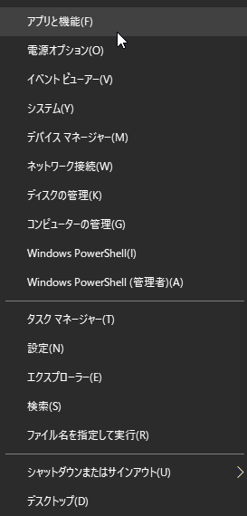
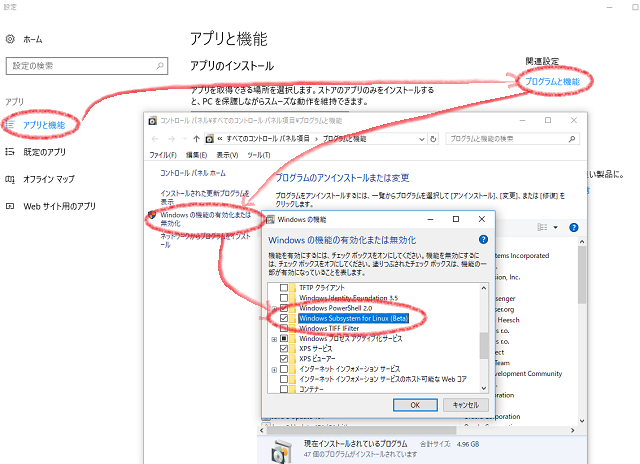
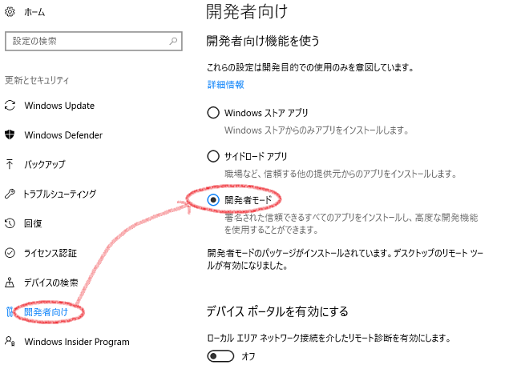
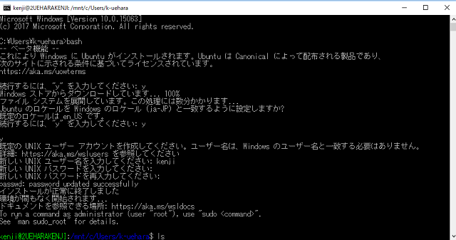

Windows10でLINUXを使えるようにする
-
スタートメニューを右クリック

- 左メニューの「アプリと機能」
- 右上の「プログラムと機能」
- 左側の「Windowsの機能の有効化または無効化」
-
「Windows Subsystem for Linux(Beta)」にチェックを入れる

- PCを再起動
- スタートメニュー → 設定
- 更新とセキュリティ
- 左メニューの「開発者向け」
-
「開発者モード」を選択

- コマンドプロントを立ち上げる
- bashコマンドを実行 例→ C:\ >bash
- メッセージを読みながらyを選択。（反応が悪いので注意。少し待つかEnterキーで回復するっぽい)
- ユーザー名を入力
- 続いてパスワードを入力（画面には入力が表示されてないが、入力されている。
- 再パスワードを入力
-
以上でOK。
次回からはコマンドプロントを起動し、「bash」と入力するだけで利用できるようになる。

Linuxの基本コマンド
| コマンド名 | 説明 | 例 |
|---|
| $ ls | カレントディレクトリ内のファイルやフォルダを一覧表示します。 | $ ls |
| $ cd | カレントディレクトリを移動する。 | $ cd \c |
| $ cd ~ | ホームに戻る。 | |
| $ pwd | 現在のディレクトリパスを表示します。 | 例：$ pwd |
| $ sh | シェルを実行する | $ sh test.sh |
| $ yum list installed | Linuxにインストールされているプログラムを一覧表示する | httpで絞り込み→$ yum list installed | grep http |
| $ ps alxw | 動作中のプログラムを一覧表示する | |
| $ ss | 開いているポート番号を一覧表示する | |
一般ユーザー($)とrootユーザー(#)
コマンド入力する箇所が、$(ドル)から始まる場合と#(シャープ)で始まる場合がある。
$は一般ユーザーであることを表している。#はrootユーザーを表している。
CRONの登録と編集
登録されているCRONを確認する
crontab -l
登録されているCRONをすべて削除する（注意）
crontab -r
CRONの登録および編集（viエディタを起動）
このコマンドは
viエディタ
を起動するだけである。登録および編集はviエディタで行わなければならない。
crontab -e
viエディタによるCRON設定の方法
基本構造
分 時 日 月 週 Linuxコマンド
例：毎日５分毎に
Cakeシェルを実行する
*/5 * * * * cd /home/アカウント名/www/プロジェクト名/app/;/usr/local/bin/php /home/アカウント名/www/プロジェクト名/app/Console/cake.php hello
時間の指定方法について
VSFTPDのインストールとコマンド
CentOS7で検証
インストール
-
VSFTPDインストール
# yum install -y vsftpd
-
FTPコマンドをインストール
# yum install -y ftp
-
サービスをスタート
# service vsftpd start
コマンド
VSFTPDがインストールされているか確認する
#rpm -qa | grep vsftpd
サービスの状態を確認
#systemctl status vsftpd.service
サービスを止める
# service vsftpd stop
サービス再起動
# service vsftpd restart
自動起動設定
# systemctl enable vsftpd.service
権限を与える
# sed -i 's/root/#root/g' /etc/vsftpd/user_list /etc/vsftpd/ftpusers
mvコマンド | ファイルを移動する
$ mv 移動元パス 移動先パス
test.txtをanimal/nekoディレクトリに移動する
$ mv test.txt animal/neko
catコマンド | ファイル内容の閲覧、別ファイルに出力
neko/test.txtファイルの内容を見る
$ cat neko/test.txt
test.txtの内容をtest2.txtに書き出す（test2.txtに上書き）
$ cat test.txt > test2.txt
test.txtの内容をtest2.txtの末尾に追加する（上書きにあらず）
$ cat test.txt >> test2.txt
test.txtとtest2.txtの中身を連結して出力する。（出力のみで保存はされず）
$ cat test.txt test2.txt
rmコマンド | ファイルやディレクトリを削除する
ファイルを削除する（xxx.txtファイルを削除する）
$ rm xxx.txt
ディレクトリを中身のファイルごと削除する
$ rm -r testDir
拡張子がtxtのファイルを削除する
$ rm *.txt
【 rm 】 ファイルやディレクトリを削除する
tarコマンド | 圧縮と解凍
圧縮
test2ディレクトリをtest2.tar.gzファイルとして圧縮する。
事前にcdコマンドでtest2が存在するディレクトリに移動しておくこと。
$ tar cvzf test2.tar.gz test2
test2.tar.gzファイルが同ディレクトリに作成される。
解凍
$ tar vxzf test2.tar.gz
XXX
- ホーム
- プログラミングの覚書
- Linuxの覚書 | ワクガンス